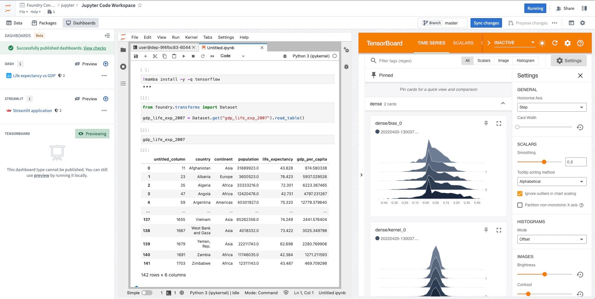

Code Workspaces enables you to use JupyterLab® â in Foundry. JupyterLab® in Code Workspaces supports:
Code Workspaces currently supports Dash â and Streamlit â for Python applications. Users can create applications directly in Code Workspaces with Foundryâs version control, branching, and data governance features built-in.
:::callout{theme="neutral"} Code Workspace applications support branching. If you create a new Workspace branch, publishing a new application or synchronizing the changes will publish a new version of the application on that branch. This allows you to preview your application before exposing it to your users. To publish on the master branch, merge your branch into master. :::
:::callout{theme="neutral"} Dash and Streamlit applications can use restricted views as inputs. When you publish from a workspace with restricted views, each user sees only data allowed by their permissions. Enable restricted outputs mode before using restricted views as application inputs. :::

Use the Settings tab to configure JupyterLab® workspace preferences. Your preferences persist across all Jupyter® workspaces.
Continuous hinting suggests code completions as you type and is enabled by default in all Jupyter® workspaces. Configure it with other JupyterLab® preferences in the Settings tab.
Use the Applications tab in the left sidebar of your JupyterLab® workspace to preview Dash, Streamlit, and TensorBoard⢠applications, and to publish Dash and Streamlit applications. TensorBoard⢠supports preview only. The panel displays one application type at a time. Before you follow any of the publishing or preview instructions below, select the application type you want to work with.
To choose which application type the panel displays:
The panel then displays the published applications and the available actions for the selected type. The panel remembers your selection for this workspace.
:::callout{theme="neutral"}
If your workspace uses managed conda/PyPI environments, you must install the library for your application type before you can publish a Dash or Streamlit application. For example, the streamlit library is required to publish a Streamlit application. When the library is missing, Publish application is disabled and the panel indicates which library to install. Install it from the Libraries panel, or run maestro env conda install <library_name> in a terminal. Install the library with conda; a PyPI installation does not satisfy this requirement. The panel also reports a missing library for TensorBoardâ¢, which has no publishing flow; in that case the message is informational and preview remains available.
:::
:::callout{theme="warning"} Published Dash applications are subject to a 30-second timeout, meaning that the Dash server must start up within 30 seconds of executing your Dash application Python file. Otherwise, your Dash application will fail to start up. :::
To create a Dash â application, follow the instructions below:
:::callout{theme="neutral"}
The module name of the Dash application should be entered as a dotted path, relative to the root of the repository (for example, app, or if your module is inside a folder,folder.app). The variable name is the Python variable within the module file that is declared for the Dash app server, which is usually called server.
:::
To develop locally against an existing Dash application:
python app.py.:::callout{theme="success"} You can ensure the conda/PyPI environment in your JupyterLab® workspace will be automatically restored in your published Dash application using managed conda/PyPI environments in Jupyter® Notebooks. :::
:::callout{theme="warning"} Published Streamlit applications are subject to a 30-second timeout, meaning that the Streamlit server must start up within 30 seconds of executing your Streamlit application Python file. Otherwise, your published Streamlit application will fail to start up. :::
To create a Streamlit â application, follow the instructions below:
app.py.To develop locally against an existing Streamlit application:
streamlit run app-name.py.:::callout{theme="success"} You can ensure the conda/PyPI environment in your JupyterLab® workspace will be automatically restored in your published Streamlit application using managed conda/PyPI environments in Jupyter® Notebooks. :::
You can preview TensorBoard⢠â directly from Code Workspaces:
tensorboard --logdir=<$PATH_TO_LOGS_DIRECTORY> from a terminal, filling in the path to the directory containing TensorFlow logs.JupyterLab® Code Workspaces provide an AIP agent in the workspace sidebar. The agent uses supported AIP large language models (LLMs) to help you develop and deploy code in Foundry. This experimental feature is available for all Foundry enrollments with AIP enabled.
In your workspace, select the \</> icon at the bottom of the left sidebar, then enter a prompt in the Ask a question... text box. The agent provides coding guidance or generates files based on its available tools.
Select the wrench icon to view the available Tools, then disable tools that the agent does not need. The tools let the agent author files, write and run code snippets, search for and install libraries, and execute terminal commands.
Use the agent's Settings menu to rename conversation threads and view the system prompt. Chat history does not persist after you shut down or restart the workspace. Sync any code or model outputs that you want to save before ending your session.
To change the agent's LLM, select the current model name at the bottom of the prompt text box. Model behavior varies across providers. Learn more about prompt engineering best practices.
You can use the AIP agent to:
:::callout{theme="warning"} Jupyter Notebook transforms do not support API calls to external services. Use external transforms for reproducible pipelines that call external systems. Use sources for interactive work in the workspace. :::
Code Workspaces can publish Jupyter® notebooks as data transformation pipelines and register transform JobSpecs for output datasets produced by the notebooks.
Follow the steps below to register a transform for an output dataset:
Save your Jupyter® notebook as a file in the workspace.
Select the blue Build icon next to the dataset in the Data panel.

Once CI checks are completed, your transform is ready for build. You can use other Foundry data integration tools to manage your transform and the data pipeline to which it belongs.
:::callout{theme="neutral"}
The transform does not automatically use the environment of the Code Workspace. You should install all the libraries needed at runtime at the top of the script file. The code snippet to install a library can be found in the Libraries panel.
For example, to use scikit-learn and scikit-image in your transform, add this code snippet to the top of the file:
!mamba install -y -q scikit-learn scikit-image
:::
Jupyter® conda/PyPI environments can be consistently restored across Jupyter® workspaces, applications, transforms, and model outputs, using the managed environment feature backed by Maestro. Maestro is a Foundry library management tool that lets you install and manage libraries for Jupyter workspaces. It integrates with conda and pip, making library installation easier and helping maintain consistent environments. To convert commands to Maestro, refer to the instructions below for either conda or PyPI.
Managed environments are consistent across Code Workspace workflows, eliminating the need to re-run the same mamba and pip commands every time you restart your workspace, start an application, or run a Jupyter® Notebook transform. With a managed environment, installed libraries in your working environment are tracked through files in your /home/user/repo folder, allowing the environment to be restored to its original state across workflows.
The following two files are used to track your managed environment:
/home/user/repo/.envs/maestro/meta.yaml: Known as the environment manifest, it contains the set of requested libraries and versions for your environment. Learn more about the meta.yaml file./home/user/repo/.envs/maestro/hawk.lock - Known as the environment lock file, it contains the set of resolved libraries and versions for your environment, solved from the constraints specified in the manifest. The hawk.lock file replaces conda.lock, which has been deprecated. Learn more about the hawk.lock file.:::callout{theme="warning"}
We do not recommend modifying the hawk.lock lock file. Instead, rely on installation commands to update the files on your behalf. Unless there is a git conflict, you do not need to modify the meta.yaml file either; it will automatically update when libraries are interactively installed.
:::
Your managed environment is installed in your /home/user/envs/default folder. This environment is restored before the following stages:
To enable this feature, toggle the Managed Conda environments advanced feature in your workspace settings, located on the left sidebar. Then, restart the workspace:

Once the feature is enabled, a managed environment named default will be available for you to use:

Follow the steps below to update your managed environment and manage libraries.
Install using the Libraries panel: Search for the library name (for example, numpy) and install.
Install using the terminal: To install the latest version of a library, run the following command in the terminal:
bash
maestro env conda install <library_name>
To install a specific version, run the following command:
bash
maestro env conda install <library_name>==<library_version>
bash
maestro env uninstall --conda-dependencies <library_names>
Install using the Libraries panel: Search for the library name (for example, numpy) and install.
Install using the terminal: To install the latest version of a library, run the following command in the terminal:
bash
maestro env pip install <library_name>
To install a specific version, run the following command:
bash
maestro env pip install <library_name>==<library_version>
bash
maestro env uninstall --pip-dependencies <library_names>
:::callout{theme="warning"}
When installing a library through the Libraries tab, the install command is executed directly in the Jupyter® terminal, rather than executing it within your notebook or application code. Every time an install command is run, the meta.yaml manifest will be updated with your requested library, and the hawk.lock file will reflect the libraries installed in the current environment.
:::
Installed libraries are visible in the Libraries tab:

Navigate to the View dropdown menu in the workspace and select Show Hidden Files.

Then, navigate to the .envs/maestro folder to view the meta.yaml and hawk.lock files.
hawk.lock fileAfter checking out a new branch or pulling new git changes, the contents of your hawk.lock file may change.
To synchronize your managed environment, execute the following command in your workspace terminal:
maestro env install
:::callout{theme="neutral"}
maestro is the command line interface that updates managed environments. The above command re-resolves the lock file from the manifest and installs the environment into the /home/user/envs/default folder.
:::
To resolve git conflicts in your managed environment, first delete the hawk.lock file. Navigate to the meta.yaml file to resolve any conflicts, then merge your branch.
After merging, run the maestro env install command in your terminal to regenerate the hawk.lock file and reinstall your managed environment.
To update your managed environment, first remove the hawk.lock file. Then, delete your /home/user/envs/default folder (rm -rf /home/user/envs/default). Finally, run the maestro env install command in your terminal to regenerate your hawk.lock file. Your environment will be re-installed with upgraded library versions.
meta.yaml fileThe meta.yaml file represents a specification of requested libraries. This file conforms to the Conda metadata specification â, and can contain specifications for both conda and PyPI dependencies. Only libraries specified in the requirements.run and requirements.pip section are used for Jupyter® managed environments.
Below is an example of a meta.yaml file:
package:
name: '{{ PACKAGE_NAME }}'
version: '{{ PACKAGE_VERSION }}'
requirements:
build: []
run:
- ipykernel
- pip
- foundry-transforms-lib-python
- pandas
- polars
- dash
- streamlit
- tensorboard
pip:
- Flask-Testing
run_constrained: []
source:
path: ../src
build: null
test: null
about: null
hawk.lock fileThe hawk.lock file contains the resolved libraries, versions, and channels of a solved managed environment.
Below is an example of a hawk.lock file:
# This file is autogenerated. Though not necessary, it can be committed to the git repository.
# To avoid build failures, we do not recommend changing this file,
[conda]
_libgcc_mutex=0.1=conda_forge @ 16fe1c80
_openmp_mutex=4.5=2_gnu @ 16fe1c80
absl-py=2.1.0=pyhd8ed1ab_0 @ c7211bb6
altair=5.3.0=pyhd8ed1ab_0 @ c7211bb6
asttokens=2.4.1=pyhd8ed1ab_0 @ c7211bb6
attrs=23.2.0=pyh71513ae_0 @ c7211bb6
aws-c-auth=0.7.22=h96bc93b_2 @ e1c11c02
aws-c-cal=0.6.14=h88a6e22_1 @ e1c11c02
aws-c-common=0.9.19=h4ab18f5_0 @ e1c11c02
aws-c-compression=0.2.18=h83b837d_6 @ e1c11c02
aws-c-event-stream=0.4.2=ha47c788_12 @ e1c11c02
aws-c-http=0.8.1=h29d6fba_17 @ e1c11c02
aws-c-io=0.14.8=h21d4f22_5 @ e1c11c02
aws-c-mqtt=0.10.4=h759edc4_4 @ e1c11c02
aws-c-s3=0.5.9=h594631b_3 @ e1c11c02
aws-c-sdkutils=0.1.16=h83b837d_2 @ e1c11c02
aws-checksums=0.1.18=h83b837d_6 @ e1c11c02
aws-crt-cpp=0.26.9=he3a8b3b_0 @ e1c11c02
aws-sdk-cpp=1.11.329=hba8bd5f_3 @ e1c11c02
blinker=1.8.2=pyhd8ed1ab_0 @ c7211bb6
brotli-python=1.1.0=py310hc6cd4ac_1 @ e1c11c02
bzip2=1.0.8=hd590300_5 @ e1c11c02
c-ares=1.28.1=hd590300_0 @ e1c11c02
ca-certificates=2024.7.4=hbcca054_0 @ e1c11c02
cachetools=5.3.3=pyhd8ed1ab_0 @ c7211bb6
certifi=2024.7.4=pyhd8ed1ab_0 @ c7211bb6
cffi=1.16.0=py310h2fee648_0 @ e1c11c02
charset-normalizer=3.3.2=pyhd8ed1ab_0 @ c7211bb6
click=8.1.7=unix_pyh707e725_0 @ c7211bb6
comm=0.2.2=pyhd8ed1ab_0 @ c7211bb6
conjure-python-client=2.8.0=pyhd8ed1ab_0 @ c7211bb6
dash=2.17.1=pyhd8ed1ab_0 @ c7211bb6
debugpy=1.8.2=py310h76e45a6_0 @ e1c11c02
decorator=5.1.1=pyhd8ed1ab_0 @ fe451c34
exceptiongroup=1.2.0=pyhd8ed1ab_2 @ c7211bb6
executing=2.0.1=pyhd8ed1ab_0 @ c7211bb6
flask=3.0.3=pyhd8ed1ab_0 @ c7211bb6
foundry-data-sidecar-api=0.626.0=py_0 @ fe451c34
foundry-transforms-lib-python=0.639.0=py_0 @ fe451c34
freetype=2.12.1=h267a509_2 @ e1c11c02
gflags=2.2.2=he1b5a44_1004 @ 16fe1c80
gitdb=4.0.11=pyhd8ed1ab_0 @ c7211bb6
gitpython=3.1.43=pyhd8ed1ab_0 @ c7211bb6
glog=0.7.1=hbabe93e_0 @ e1c11c02
grpcio=1.62.2=py310h1b8f574_0 @ e1c11c02
h2=4.1.0=pyhd8ed1ab_0 @ fe451c34
hpack=4.0.0=pyh9f0ad1d_0 @ fe451c34
hyperframe=6.0.1=pyhd8ed1ab_0 @ fe451c34
idna=3.7=pyhd8ed1ab_0 @ c7211bb6
importlib-metadata=7.2.1=pyha770c72_0 @ c7211bb6
importlib_metadata=7.2.1=hd8ed1ab_0 @ c7211bb6
importlib_resources=6.4.0=pyhd8ed1ab_0 @ c7211bb6
ipykernel=6.29.5=pyh3099207_0 @ c7211bb6
ipython=8.26.0=pyh707e725_0 @ c7211bb6
ipywidgets=8.1.3=pyhd8ed1ab_0 @ c7211bb6
itsdangerous=2.2.0=pyhd8ed1ab_0 @ c7211bb6
jedi=0.19.1=pyhd8ed1ab_0 @ c7211bb6
jinja2=3.1.4=pyhd8ed1ab_0 @ c7211bb6
jsonschema=4.23.0=pyhd8ed1ab_0 @ c7211bb6
jsonschema-specifications=2023.12.1=pyhd8ed1ab_0 @ c7211bb6
jupyter_client=8.6.2=pyhd8ed1ab_0 @ c7211bb6
jupyter_core=5.7.2=py310hff52083_0 @ e1c11c02
jupyterlab_widgets=3.0.11=pyhd8ed1ab_0 @ c7211bb6
keyutils=1.6.1=h166bdaf_0 @ 16fe1c80
krb5=1.21.3=h659f571_0 @ e1c11c02
lcms2=2.16=hb7c19ff_0 @ e1c11c02
ld_impl_linux-64=2.40=hf3520f5_7 @ e1c11c02
lerc=4.0.0=h27087fc_0 @ 16fe1c80
libabseil=20240116.2=cxx17_h59595ed_0 @ e1c11c02
libarrow=16.1.0=hcb6531f_6_cpu @ e1c11c02
libarrow-acero=16.1.0=hac33072_6_cpu @ e1c11c02
libarrow-dataset=16.1.0=hac33072_6_cpu @ e1c11c02
libarrow-substrait=16.1.0=h7e0c224_6_cpu @ e1c11c02
libblas=3.9.0=22_linux64_openblas @ e1c11c02
libbrotlicommon=1.1.0=hd590300_1 @ e1c11c02
libbrotlidec=1.1.0=hd590300_1 @ e1c11c02
libbrotlienc=1.1.0=hd590300_1 @ e1c11c02
libcblas=3.9.0=22_linux64_openblas @ e1c11c02
libcrc32c=1.1.2=h9c3ff4c_0 @ 16fe1c80
libcurl=8.8.0=hca28451_1 @ e1c11c02
libdeflate=1.20=hd590300_0 @ e1c11c02
libedit=3.1.20191231=he28a2e2_2 @ 16fe1c80
libev=4.33=hd590300_2 @ e1c11c02
libevent=2.1.12=hf998b51_1 @ e1c11c02
libffi=3.4.2=h7f98852_5 @ 16fe1c80
libgcc-ng=14.1.0=h77fa898_0 @ e1c11c02
libgfortran-ng=14.1.0=h69a702a_0 @ e1c11c02
libgfortran5=14.1.0=hc5f4f2c_0 @ e1c11c02
libgomp=14.1.0=h77fa898_0 @ e1c11c02
libgoogle-cloud=2.24.0=h2736e30_0 @ e1c11c02
libgoogle-cloud-storage=2.24.0=h3d9a0c8_0 @ e1c11c02
libgrpc=1.62.2=h15f2491_0 @ e1c11c02
libjpeg-turbo=3.0.0=hd590300_1 @ e1c11c02
liblapack=3.9.0=22_linux64_openblas @ e1c11c02
libnghttp2=1.58.0=h47da74e_1 @ e1c11c02
libnsl=2.0.1=hd590300_0 @ e1c11c02
libopenblas=0.3.27=pthreads_hac2b453_1 @ e1c11c02
libparquet=16.1.0=h6a7eafb_6_cpu @ e1c11c02
libpng=1.6.43=h2797004_0 @ e1c11c02
libprotobuf=4.25.3=h08a7969_0 @ e1c11c02
libre2-11=2023.09.01=h5a48ba9_2 @ e1c11c02
libsodium=1.0.18=h36c2ea0_1 @ 16fe1c80
libssh2=1.11.0=h0841786_0 @ e1c11c02
libstdcxx-ng=14.1.0=hc0a3c3a_0 @ e1c11c02
libthrift=0.19.0=hb90f79a_1 @ e1c11c02
libtiff=4.6.0=h1dd3fc0_3 @ e1c11c02
libutf8proc=2.8.0=h166bdaf_0 @ 16fe1c80
libuuid=2.38.1=h0b41bf4_0 @ e1c11c02
libwebp-base=1.4.0=hd590300_0 @ e1c11c02
libxcb=1.15=h0b41bf4_0 @ e1c11c02
libzlib=1.2.13=h4ab18f5_6 @ e1c11c02
lz4-c=1.9.4=hcb278e6_0 @ e1c11c02
markdown=3.6=pyhd8ed1ab_0 @ c7211bb6
markdown-it-py=3.0.0=pyhd8ed1ab_0 @ c7211bb6
markupsafe=2.1.5=py310h2372a71_0 @ e1c11c02
matplotlib-inline=0.1.7=pyhd8ed1ab_0 @ c7211bb6
mdurl=0.1.2=pyhd8ed1ab_0 @ c7211bb6
ncurses=6.2=h58526e2_4 @ 16fe1c80
nest-asyncio=1.6.0=pyhd8ed1ab_0 @ c7211bb6
numpy=1.26.4=py310hb13e2d6_0 @ e1c11c02
openjpeg=2.5.2=h488ebb8_0 @ e1c11c02
openssl=3.3.1=h4ab18f5_1 @ e1c11c02
orc=2.0.1=h17fec99_1 @ e1c11c02
packaging=24.1=pyhd8ed1ab_0 @ c7211bb6
pandas=2.2.2=py310hf9f9076_1 @ e1c11c02
parso=0.8.4=pyhd8ed1ab_0 @ c7211bb6
pexpect=4.9.0=pyhd8ed1ab_0 @ c7211bb6
pickleshare=0.7.5=py_1003 @ fe451c34
pillow=10.3.0=py310hf73ecf8_0 @ e1c11c02
pip=24.0=pyhd8ed1ab_0 @ c7211bb6
pkgutil-resolve-name=1.3.10=pyhd8ed1ab_1 @ c7211bb6
platformdirs=4.2.2=pyhd8ed1ab_0 @ c7211bb6
plotly=5.22.0=pyhd8ed1ab_0 @ c7211bb6
polars=1.1.0=py310h3af5803_0 @ e1c11c02
prompt-toolkit=3.0.47=pyha770c72_0 @ c7211bb6
protobuf=4.25.3=py310ha8c1f0e_0 @ e1c11c02
psutil=6.0.0=py310hc51659f_0 @ e1c11c02
pthread-stubs=0.4=h36c2ea0_1001 @ 16fe1c80
ptyprocess=0.7.0=pyhd3deb0d_0 @ fe451c34
pure_eval=0.2.2=pyhd8ed1ab_0 @ fe451c34
pyarrow=16.1.0=py310h17c5347_1 @ e1c11c02
pyarrow-core=16.1.0=py310h6f79a3a_1_cpu @ e1c11c02
pycparser=2.22=pyhd8ed1ab_0 @ c7211bb6
pydeck=0.8.0=pyhd8ed1ab_0 @ fe451c34
pygments=2.18.0=pyhd8ed1ab_0 @ c7211bb6
pysocks=1.7.1=pyha2e5f31_6 @ fe451c34
python=3.10.2=h543edf9_0_cpython @ 16fe1c80
python-dateutil=2.9.0=pyhd8ed1ab_0 @ c7211bb6
python-tzdata=2024.1=pyhd8ed1ab_0 @ c7211bb6
python_abi=3.10=4_cp310 @ e1c11c02
pytz=2024.1=pyhd8ed1ab_0 @ c7211bb6
pyyaml=6.0.1=py310h2372a71_1 @ e1c11c02
pyzmq=26.0.3=py310h6883aea_0 @ e1c11c02
re2=2023.09.01=h7f4b329_2 @ e1c11c02
readline=8.1=h46c0cb4_0 @ 16fe1c80
referencing=0.35.1=pyhd8ed1ab_0 @ c7211bb6
requests=2.32.3=pyhd8ed1ab_0 @ c7211bb6
retrying=1.3.3=py_2 @ fe451c34
rich=13.7.1=pyhd8ed1ab_0 @ c7211bb6
rpds-py=0.19.0=py310h42e942d_0 @ e1c11c02
s2n=1.4.15=he19d79f_0 @ e1c11c02
setuptools=70.1.1=pyhd8ed1ab_0 @ c7211bb6
six=1.16.0=pyh6c4a22f_0 @ fe451c34
smmap=5.0.0=pyhd8ed1ab_0 @ fe451c34
snappy=1.2.1=ha2e4443_0 @ e1c11c02
sqlite=3.37.0=h9cd32fc_0 @ 16fe1c80
stack_data=0.6.2=pyhd8ed1ab_0 @ c7211bb6
streamlit=1.36.0=pyhd8ed1ab_0 @ c7211bb6
tenacity=8.5.0=pyhd8ed1ab_0 @ c7211bb6
tensorboard=2.17.0=pyhd8ed1ab_0 @ c7211bb6
tensorboard-data-server=0.7.0=py310h75e40e8_1 @ e1c11c02
tk=8.6.13=noxft_h4845f30_101 @ e1c11c02
toml=0.10.2=pyhd8ed1ab_0 @ fe451c34
toolz=0.12.1=pyhd8ed1ab_0 @ c7211bb6
tornado=6.4.1=py310hc51659f_0 @ e1c11c02
traitlets=5.14.3=pyhd8ed1ab_0 @ c7211bb6
typing-extensions=4.12.2=hd8ed1ab_0 @ c7211bb6
typing_extensions=4.12.2=pyha770c72_0 @ c7211bb6
tzdata=2024a=h0c530f3_0 @ c7211bb6
tzlocal=5.2=py310hff52083_0 @ e1c11c02
urllib3=2.2.2=pyhd8ed1ab_1 @ c7211bb6
validators=0.31.0=pyhd8ed1ab_0 @ c7211bb6
watchdog=4.0.1=py310hff52083_0 @ e1c11c02
wcwidth=0.2.13=pyhd8ed1ab_0 @ c7211bb6
werkzeug=3.0.3=pyhd8ed1ab_0 @ c7211bb6
wheel=0.43.0=pyhd8ed1ab_1 @ c7211bb6
widgetsnbextension=4.0.11=pyhd8ed1ab_0 @ c7211bb6
xorg-libxau=1.0.11=hd590300_0 @ e1c11c02
xorg-libxdmcp=1.1.3=h7f98852_0 @ 16fe1c80
xz=5.2.6=h166bdaf_0 @ 16fe1c80
yaml=0.2.5=h7f98852_2 @ 16fe1c80
zeromq=4.3.5=h75354e8_4 @ e1c11c02
zipp=3.19.2=pyhd8ed1ab_0 @ c7211bb6
zlib=1.2.13=h4ab18f5_6 @ e1c11c02
zstandard=0.22.0=py310hab88d88_1 @ e1c11c02
zstd=1.5.6=ha6fb4c9_0 @ e1c11c02
[pip]
brotli==1.1.0
importlib-resources==6.4.0
jupyter-client==8.6.2
jupyter-core==5.7.2
jupyterlab-widgets==3.0.11
pure-eval==0.2.2
stack-data==0.6.2
[conda-metadata]
16fe1c80 - linux-64 @ tar.bz2 @ ri.artifacts.repository.bundle.jupyter-default-environment
c7211bb6 - noarch @ conda @ ri.artifacts.repository.bundle.jupyter-default-environment
e1c11c02 - linux-64 @ conda @ ri.artifacts.repository.bundle.jupyter-default-environment
fe451c34 - noarch @ tar.bz2 @ ri.artifacts.repository.bundle.jupyter-default-environment
[conda lock version]
v3 - 0454ce4598cd475c502df1fe8a15b86ddae33cd74f97c833cb35f122e7555dfe
Jupyter®, JupyterLab®, and the Jupyter® logos are trademarks or registered trademarks of NumFOCUS.
TensorBoard and any related marks are trademarks of Google Inc.
All third-party trademarks (including logos and icons) referenced remain the property of their respective owners. No affiliation or endorsement is implied.